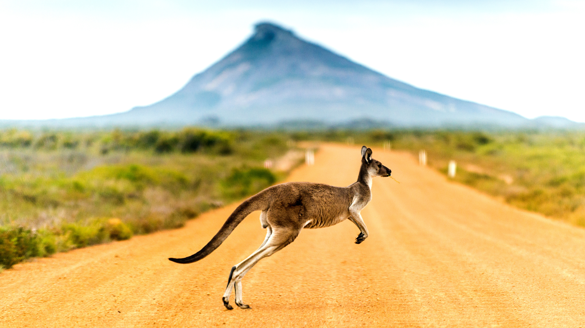

- Contact Us
- Terms & Conditions
- Anti Fraud Policy
- Privacy Policy
- Refund Policy
- Shipping & Return Policy
© 2023 FLIGHT2SUCESS . ALL RIGHTS RESERVED.
Are you planning to explore the wonders of Australia, embark on a business venture, or perhaps pursue your education Down Under? The first crucial step in your journey is obtaining an Australian visa.
This guide will walk you through the intricacies of the Australian visa process, covering various visa types, application procedures, specific requirements, fees, and more. Whether you're an Indian citizen or a global traveler, understanding the Australian visa system is essential for a smooth experience.

According to the Australian government, an Australian visa is an official authorization document that allows foreign nationals to enter and stay in Australia for specific purposes. While most travelers require an Australian visa to enter the country, some countries enjoy visa-free access. The type of visa you need depends on factors like the duration of your stay, the number of entries, and your purpose of visit.
Australia takes its border security seriously, and obtaining a visa involves meeting specific document and eligibility criteria.
When applying for an Australian visa, you can choose between online and offline application methods. The suitability of these methods depends on the visa type you seek:
Online Procedure:
Create an ImmiAccount: Begin by creating an ImmiAccount on the official Australian government website. This account will serve as your platform for the online visa application.
Select Your Visa Category: Choose the appropriate visa category based on your purpose, such as tourist, business, work, study, or permanent residency.
Complete the Application Form: Fill out the online visa application form accurately, providing all requested information and attaching the required documents.
Payment: Pay the visa application fee online.
Submission: Submit your application form electronically through the ImmiAccount.
Biometrics and Health Examination: Depending on your visa type, you may need to provide biometrics (fingerprints and photographs) or undergo a health examination.
Offline Procedure:
Visit the Immigration Website: Navigate to the official Immigration website of Australia.
Choose Visa Category: Select the visa category that aligns with your purpose of travel.
Print Application Form: Download and print the application form corresponding to your chosen visa category.
Form Completion: Fill out the form with precision, ensuring all required details are provided, and sign it.
Document Submission: Attach all necessary original documents as specified by the embassy or consulate.
In-Person Submission: Submit the completed application form and pay the visa fees at the embassy or consulate.
Biometrics and Health Examination: If required, complete biometrics and health examinations as instructed by the embassy.
It's essential to meticulously follow the application process to avoid any delays or complications. If you find the procedure daunting, consider seeking assistance from experts who specialize in Australian visa services.
Australia offers a diverse range of visa categories to cater to different travel purposes. Here, we shed light on a few of the most commonly sought-after Australian visa types:
Tourist Visa Australia (Subclass 600)
Purpose: For tourists, holidaymakers, or visiting family and friends.
Stay Duration: Typically ranges from 3 months to 12 months.
Visa Stream: Includes the visitor stream, business visitor stream, and sponsored family stream.
Business Visa Australia
Purpose: For entrepreneurs, investors, and business professionals looking to conduct business activities in Australia.
Various Subclasses: Includes Business Innovation and Investment visas (Subclasses 188 and 888), and Business Talent (Permanent) visas (Subclasses 132).
Visitor Visa Australia (Subclass 600)
Purpose: Short-term visits for business or tourism, or to meet a sponsor or family member.
Visa Stream: Business stream, tourist stream, and sponsored family stream.
Temporary Work Visa Australia (Subclass 400)
Purpose: Short-term work in specialized or non-ongoing roles.
Stay Duration: Typically for 3 months, extendable in certain cases.
Temporary Activity Visa Australia (Subclass 408)
Purpose: Engage in various activities or work on a short-term basis.
Visa Stream: Includes religious activities, sports activities, and more.
Australia Transit Visa (Subclass 771)
Purpose: Allows transit through Australia for up to 72 hours when en route to another country.
Australia PR Visa (Permanent Residency)
Purpose: Migrate to Australia for permanent residence, often with family members.
Indian citizens applying for an Australian visa must meet specific requirements. Here's a list of essential requirements:
Valid Passport: Your passport should have a validity of up to 6 months beyond your intended departure date.
Colored Photographs: Ensure your photos comply with specified size and background color requirements.
Cover Letter: IInclude a detailed cover letter explaining the purpose and duration of your visit.
Proof of Funds: Provide evidence of sufficient financial means to support yourself during your stay.
Bank Statements: Present savings bank statements from the previous 6 months and salary slips or equivalent financial documents.
Invitation Letter: If visiting friends or family, obtain a letter specifying your relationship with the invitee and the purpose and length of your stay.
Employment or Education Documents: If employed or studying, include letters from your employer or educational institution.
Character Documents: Obtain a Police Clearance Certificate (PCC) as part of character verification.
Return Ticket: Show proof of your return ticket to your home country.
Income Tax Returns: Provide proof of income tax returns.
Identification Documents: Include copies of identification documents such as PAN card and Aadhaar card.
Ensure that your visa application photos meet the following specifications:
Size: Typically 35 mm x 45 mm (passport-sized).
Background Plain white or light-colored background.
Facial Expression: Maintain a neutral expression with both eyes open, mouth closed, and no smiling.
Head Positioning: Your face should be centered and occupy 70-80% of the photo.
Headgears and Glasses: Generally not allowed except for religious reasons.
Clothing: Avoid clothing that matches the background.
Precise photo guidelines can be found on the official Australian government website.
The Australian visa process is primarily conducted online. Here's a step-by-step overview of how it works:
Online Application: Start by filling out the online visa application form through an authorized visa provider or the official Immigration website.
Document Upload: Attach the necessary documents as specified in your application.
Fee Payment: Pay the required visa fees online during the application process.
Submission: Submit your application electronically through the ImmiAccount or the Immigration website.
Biometrics and Health Examination: If necessary, provide biometrics and undergo a health examination as instructed by the Australian authorities.
High Commission Verification: After submission, your application will undergo verification by the Australia High Commission.
Financial Verification: Ensure that the bank balance mentioned in your application is maintained.
Status Tracking: You can track the status of your visa application online through the Australia High Commission website, using your passport number and application ID.
The fees for Australian visas vary depending on the specific category and duration of the visa. The fees are
subject to change, so it's essential to check the latest fee information on the official Australian
government website or through your local Australian embassy or consulate.
Here is an overview of the
fees for some common visa categories:
Multiple Entry Normal Business Visa (1 year): INR 7,700
Multiple Entry Normal Medical Visa (1 year): INR 7,700
Multiple Entry Normal Tourist Visa (1 year): INR 7,700
Activity Subclass 408 Visa (1 year): INR 8,840
Multiple Entry Normal Work Visa (1 year): INR 9,400
Multiple Entry Normal Subclass 600 Visa (1 year): INR 17,050
Please note that these fees are subject to change, and it's essential to verify the current fee structure before applying for your visa.
The validity of your Australian visa depends on various factors, including your visa category and the purpose of your visit. When applying for your visa, you will specify the duration and purpose of your stay. The Australian immigration authorities will determine the final validity of your visa based on this information.
The validity of your Australian visa depends on various factors, including your visa category and the purpose of your visit. When applying for your visa, you will specify the duration and purpose of your stay. The Australian immigration authorities will determine the final validity of your visa based on this information.
Using Passport Number and Application ID: If you've processed your application online, you can track your status by submitting your passport number and application ID on the Australia High Commission's website.
Name, Birth Date, and Application Number: Alternatively, you may use your name (as mentioned in the application form), birth date, passport number, and application number on specific tracking portals.
Tracking ID from Service Providers:If you've used a consultancy or visa service provider, they may provide you with a tracking ID to monitor your application's progress.
In conclusion, navigating the Australian visa process is a critical step in realizing your Australian dreams, whether it involves leisure, business, or education. Whether you're an Indian citizen or a traveler from another part of the world, understanding the visa requirements, application procedures, and specific visa types will help ensure a smooth and successful journey to Australia. Always consult the official Australian government website or seek assistance from registered migration experts for the most up-to-date information and personalized guidance during your visa application journey.